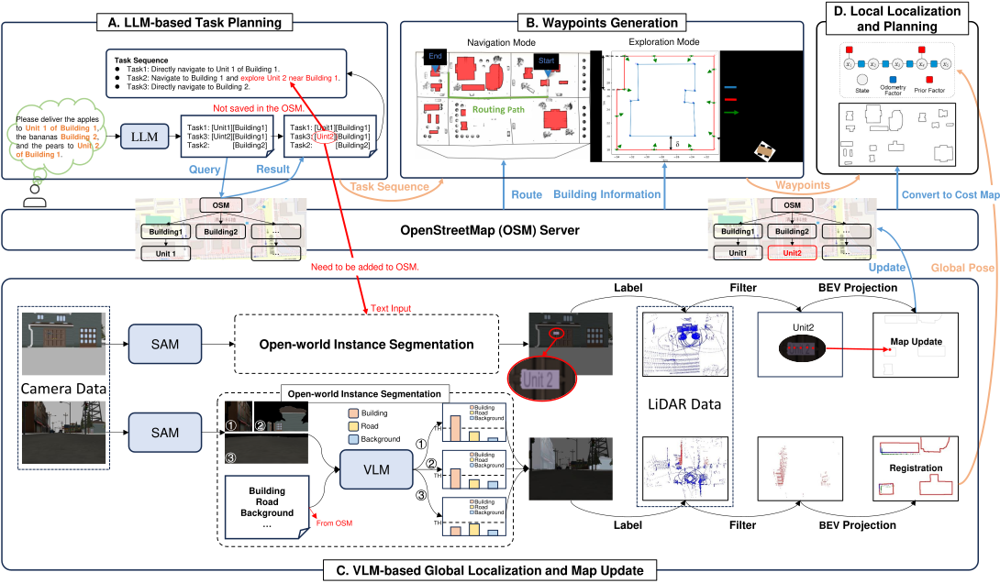

Overview of the proposed benchmark framework. The diagram presents the simulation environments and corresponding OSM, which are provided for the implementation of semantic navigation systems. This framework necessitates the navigation system to process natural language instructions autonomously, enabling accurate navigation from the initial starting point to the designated customer's front door.
Simulation environment for last-mile delivery. Based on the Gazebo simulation platform, we constructed three distinct world models of varying sizes, categorized into three levels: small, medium, and large, depending on the complexity of their environments. Each building within these models has been labeled with house numbers on their doors. Additionally, corresponding OSM data are generated for each world model, reflecting real-world situations.

Overview of the OPEN system for autonomous last-mile delivery. The system initiates with a natural language delivery request, processed by a task planning module powered by an LLM. This module interacts with OSM to extract destination details and generates a structured task sequence. The robot autonomously decides between navigation and exploration modes, generating waypoints for execution by a classical planner.
Illustration of the real-world experiment. The top-left part presents the OSM and target buildings. The bottom-left part displays the delivery instructions. The right side of the figure shows the navigation trajectories of different methods.
If you find our work useful in your research, please consider citing:
@inproceedings{wangopenbench,
title={Openbench: A New Benchmark and Baseline for Semantic Navigation in Smart Logistics},
author={Wang, Junhui and Huo, Dongjie and Xu, Zehui and Shi, Yongliang and Yan, Yimin and Wang, Yuanxin and Gao, Chao and Qiao, Yan and Zhou, Guyue},
booktitle={XXX},
year={2025}
}